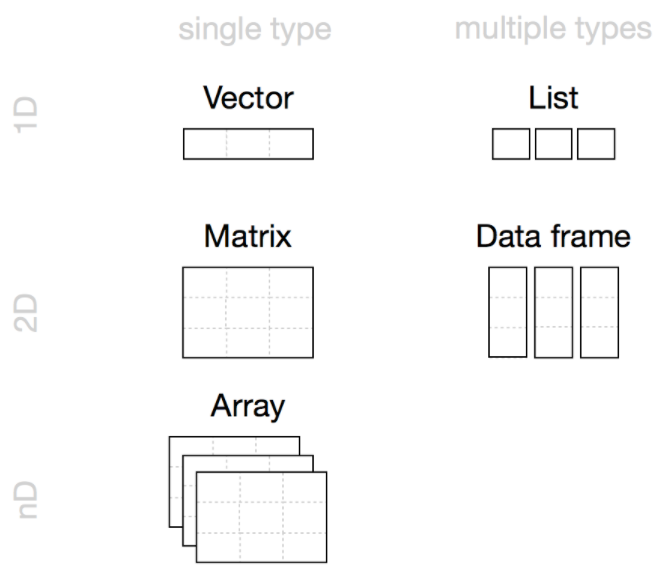

1 + 1[1] 2# 用 3, 4, 5, 9 算 24 点
(4 + 9 - 5) * 3[1] 24R 语言是统计学家设计的编程语言。
假设一趟京广高铁总共要经过15个车站，那么相当于有210个区间组合。如果一名乘客购买了一张从北京到广州的车票，那就意味着要在210个区间上锁定这个座位，避免重复出票。放眼全国，无数的列车交织成一张巨大的数据网络，这需要一套非常先进的算法。所以12306需要用Java来开发，不可能用R。类似地，C++使用舞蹈链（Dancing Links）算法解开一个数独，所需时间不到1毫秒，这显然也是R做不到的。
假设有一个宏观经济学问题，需要求解一个抛物型偏微分方程，我们需要用到Schmidt, Crank-Nicolson, 或 Du Fort and Frankel 的方法。这时，Matlab 或 Julia 会是最合适的软件，因为它们内置了很多实用的函数，而且计算速度也很不错。
假设你手头有几百万条招聘广告。你希望用一套简单的指令调用GPT-4或其他AI引擎的API，批量地阅读这些广告，并给每条广告贴一个“职业类别”的标签。当前，最好用的软件是Python，因为它有最成熟的接入Openai的方案。
假设你拿到了一套调查数据，需要处理变量标签、数值标签，也需要画模型拟合图，那么Stata再适合不过了。
假设有200多名学员报名了2024年云南大学的暑期班，他们的学校、专业、推荐人等信息都记录在一张表里。他们可能会写邮件说无法参加。有的同学也可能临时加入。有一些学生的特殊情况需要写备注或标记出来。这张表格可能需要在好几个人之间转手，调整不同的内容。鉴于这些需求，Excel显然是最好用的软件，而R的代码就太显累赘了。
综上所述，R不擅长处理大数据、不擅长算法、不擅长科学计算、不擅长人工智能、不擅长处理变量标签、不擅长编辑繁琐的表格。在很多问题上，都有更强大的替代软件。
虽然R不擅长这些，但是R仍然可以完成上面大多数的任务。R可以做矩阵运算，可以调用C++，可以接入Openai的API，可以分析调查数据，可以模仿marginslot，可以逐个单元格编辑表格。R还可以爬取网页，可以机器学习，可以深度学习，可以分析五花八门的数据，可以输出多种多样的图表。
R 语言封装了大量的实用函数。在我看来，在所有软件中，R 对统计相关函数的覆盖最为全面，在很多任务上优于 Stata 和 Python，当然更优于 Excel 和 C++。此外，相比 R 的强大功能，它的代码并不复杂。
您可以前往 R 的官网下载最新版本的 R。
您也可以在RStudio的官网下载 RStudio。
顾名思义，RStudio 就是 R 的工作室。我们知道，编程语言需要写代码，但我们通常不会用 txt 文本文档来写；集成开发环境（IDE）才是我们写代码最合适的地方。Posit 公司开发的 RStudio 就是当下最全能、最热门的 R 语言 IDE。
顺带一提，现在也有很多 R 用户使用微软的 Visual Studio Code (VS Code)。这是一个更综合的 IDE，可以兼容各种各样的编程语言。
这是一个非常干净的RStudio的界面。左上角的部分是源文件窗口，用来阅读和书写代码；左下角的部分是控制台（console），用来输出代码的运行结果；右上角的窗口罗列了当前环境（environment）中的对象（objects），也可以用来查看已执行的代码；右下角的窗口整合了文件、图像、包（packages）、帮助等功能。
RStudio 提供了一些实用的快捷键，现阶段我们只需要记住一个：Ctrl/Cmd + Enter运行选中代码。
AI时代，写代码不能少了Copilot。请参考这篇公众号文章，在RStudio中配置Copilot。它可以帮你自动补全代码。
Copilot 有很多使用方法，其核心逻辑是通过代码文件中现有的内容来预测你接下来想写的东西。比方说，如果你想批量地对数据中的变量名做某一种操作，那么大约有下列步骤：
注意，一般来说，Copilot 只会填补句尾、整行或整段的空白。换句话说，你需要把光标移动到句末或者空白行，它才会开始运转。当光标在句中或句首时，别再痴痴地等着它来填补啦。
安装好了 R 和 RStudio，我们就可以尝试一些简单的代码了。比方说，我们可以在 R 里面直接进行四则运算：
1 + 1[1] 2# 用 3, 4, 5, 9 算 24 点
(4 + 9 - 5) * 3[1] 24在 R 里面，可以用引号包裹多语言文本：
# 使用英文的单引号 '' 或双引号 "" 表示文本
"你好，R！"[1] "你好，R！"也可以调用函数完成更复杂的任务：
# 用 sqrt() 开平方根
sqrt(25)[1] 5# 用 nchar() 数字符数
nchar("你好")[1] 2此外，我们可以把一些结果存储下来，以便后期调用：
# 赋值 a 为 123
a <- 123
# 查看 a 的值
a[1] 123# 计算 a 乘以 2
a * 2[1] 246# 赋值 b 为 a 乘以 2 的结果
b <- a * 2
# 查看 b 的值
b[1] 246在本书中，我们主要需要用到 tidyverse 包和 statart 包。在继续下面的内容之前，请让我们先下载这两个包：
# 下载 tidyverse
install.packages("tidyverse")
# 下载 statart
devtools::install_github("socimh/statart")好，在刚才的例子里，我们其实接触了很多 R 里面的对象（object）。我们可以使用 statart 包里的 s_type() 函数来判断对象的类型（type）：
library(statart)# 实数（double）
s_type(25)[1] "double"# 字符（character）
s_type("你好，R！")[1] "character"# 函数（function）
s_type(sqrt)[1] "function"函数通常都以 f() 的形式出现，带有圆括号。
所以，在前面一小节的几行代码里，我们已经接触了实数（double）、字符（character）和函数（function）这三种对象了。反过来说，上述代码基本都是由对象组成的。
我们可以把对象大致分为数据（data）和函数。广义的“数据”类似于信息（information），比方说 25 和 "你好"，只要有实际内容就行。当然，这和我们日常生活中的用法有所不同。我眼中的数据，可以涵盖衣食住行等我们生活中任何有实际意义的东西。
所有信息，都可以是数据。
如果代码中只有数据，那它通常做不了什么。打个比方，数据就像是名词，而一堆名词是零散的，无法组成句子。“头、明月、头、故乡”，这不成一句话；“举头望明月，低头思故乡”有了动词的“润滑”，就可以串联成一句话了。函数就像是动词。
在 R 语言里，数据（data）通常像名词，而函数（functions）通常像动词。
R 语言是一门分析数据的语言。但是，数据的种类那么多，我们要如何上手呢？我想从数据的维度说起。
随着 3D 电影和 VR 设备的普及，我们可以看到三维立体的视频。3D 的 D 就是维度（dimension）的意思。在我看来，我们常用的数据也有四种维度：零维、一维、二维和多维。
| 维度 | 几何意义 | 数据意义 | R 语言范例 |
|---|---|---|---|
| 零维（0D） | 点 | 值 | 数、字符等 |
| 一维（1D） | 线 | 列 | 数列、字符向量等 |
| 二维（2D） | 面 | 表格 | 矩阵、tibble等 |
| 多维（nD） | 多维空间 | 数组（array） | 数组、多级列表等 |
零维的数据就是值。比方说，我们讲中国有14亿人，“14亿”就是一个零维的数据；广东简称“粤”，则“粤”这个字也可以视作零维的数据。
一维的数据是列，或者说多个值的集合。这在我们生活中很常见。比方说，1到10的数列就是一维的数据；再比如，中国所有省份的名称，就构成一列字符，或者叫字符向量（character vector）。
二维的数据是表，或者说多列的集合。这也是我们生活中最常见的数据维度，像 Excel 一打开就是二维数据的处理面板。这里不做赘述。
多维的数据是数组，是由低维数据一层层集合上来得到的。一个例子是时间：秒、分、时、天、月、年，向上集合，最终组成了一个六维的数据。年包括月，月包括天，以此类推。我们说“2008年8月8日 20时00分00秒”，其实就是指定了六个维度，指向时间的六维空间中特定的那一个时点——北京奥运会开幕的那个瞬间。

显然，我们做统计分析时，最常接触的就是一维和二维的数据。但是在 R 里面，一维和二维的数据仍然有很多类型，我们应该从何学起呢？
我认为，只要先把 tibble 摸透，就可以完成大多数数据分析了。
当然，输入和输出的数据，通常都不是 tibble。但是，只需要三个步骤，我们就可以把任意格式的输入数据转换成任意格式的输出内容了。
这里，输入的数据格式可以是
类似地，R 不仅可以导出成上面大部分格式的数据，而且可以直接输出统计报告，包括
可见，学会了 tibble 这个桥梁，我们能够完成多少任务！

用成语接龙打个比方，大部分成语输入的字和输出的字都不一样。但是，“为所欲为”却是一个例外，输入的是“为”，输出的也是“为”。学会“为所欲为”的小朋友，哪怕成语储备量只有这一个，也能自己接龙100次。（详见 章节 5.5 ）
我们工作坊要学的，99%的函数都会围绕 tibble 和 gg；这是我的刻意设计，也是大势所趋。
我对R的初学者有三个建议：
其实我自己现在也是这样。data.table 怎么用，早就忘得差不多了；想要处理一个复杂的 list，有的 purrr 函数，也得临时去查。不过一旦入门了，这种简单的函数，一两分钟就会用了。
Week1-1. import_and_export_dta.R 简要地演示了清理数据的全流程Week1-2. import_and_plot_dta.R 简要地演示了数据可视化的全流程Week1-3. import_any_data.R 展示了如何导入各种类型的数据Week1-4. generate_and_export_any_data.R 展示了如何生成、导出各种类型的数据